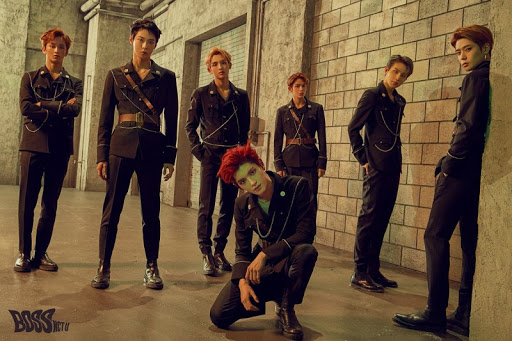
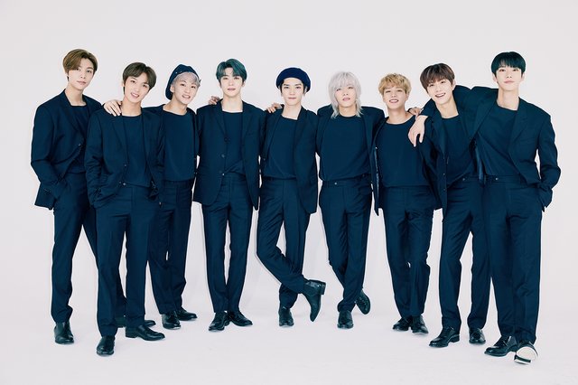

SM entertainment
NCT
NCT unit
NCT member
NCT 유닛
NCT U

노래에 어울리는 멤버 모아 활동 한다. 멤버 변동이 있어 리더기 없다.
NCT 127

서울 지역을 기반으로 하는 유닛팀이다. 리더는 태용이고, 멤버의 영입이 자유롭고 퇴출이 안된다.
NCT DREAM
청소년 연합팀으로 만 19세까지만 활동한다. 멤버들의 변동 있어 리더가 없다. 하지만 최근 7명으로 고정되었다.
NCT WAYV
중국을 기반으로 활동하고 멤버 교체가 없는 고정 유닛이다.